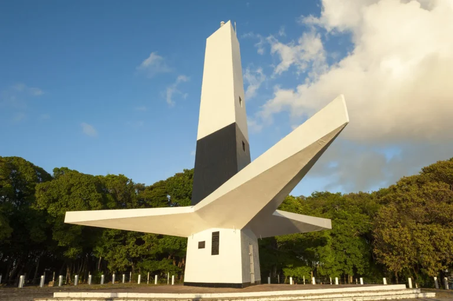
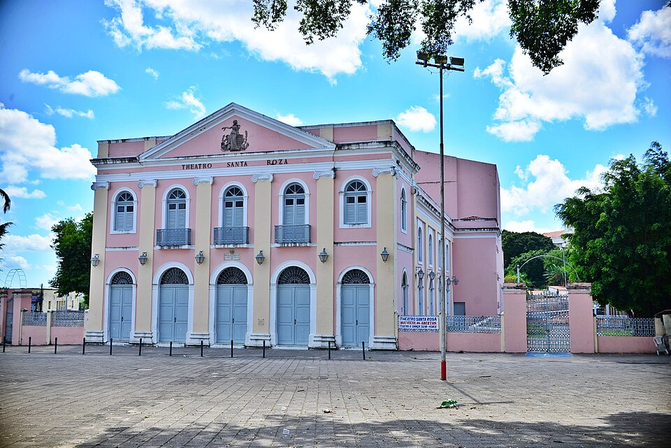
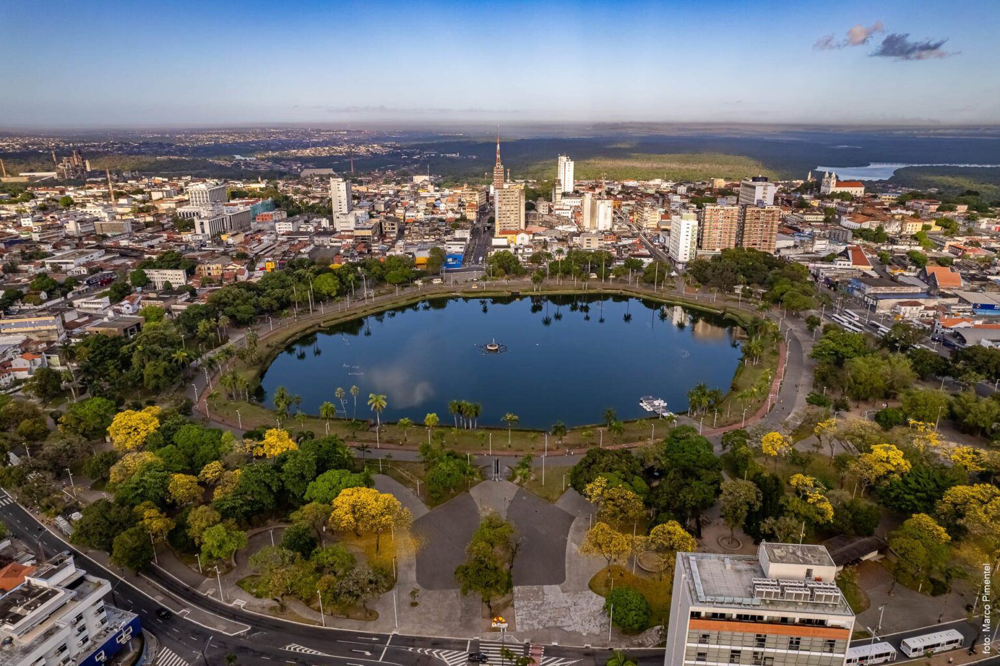

Pontos Turísticos de João Pessoa

Farol do Cabo Branco
Um dos cartões-postais mais famosos da capital paraibana. Situado no alto de uma falésia na Ponta do Seixas, destaca-se pelo seu formato triangular único e proporciona uma vista panorâmica inesquecível do oceano Atlântico.
Abrir no Google Maps
Teatro Santa Roza
Um verdadeiro tesouro da arquitetura clássica e um dos teatros mais antigos do país. Com detalhes ornamentados impressionantes, o espaço é um importante marco da história, da arte e da rica cena cultural da Paraíba.
Abrir no Google Maps
Parque Solon de Lucena
Carinhosamente conhecido como "a Lagoa", este grande parque público fica bem no coração da cidade. É um verdadeiro refúgio verde rodeado por imponentes palmeiras imperiais, ideal para caminhadas relaxantes ao redor da água.
Abrir no Google Maps